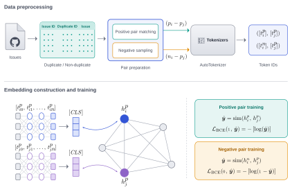

Course project · CS 588, Bilkent · 2025–26
Graph Enhanced Transformer for Semi-Supervised Duplicate Bug Report Detection
Bilkent University

Context
Duplicate bug report detection aims to identify bug reports that describe the same underlying problem or can be resolved by the same fix. In large-scale repositories, duplicates increase triage workload and waste developer time. While transformer-based sentence encoders improve semantic matching compared to classical IR baselines, they rely on labeled duplicate pairs, which are typically scarce in real-world repositories. Moreover, exhaustive pairwise training is computationally infeasible and cannot effectively incorporate the full pool of unlabeled reports.
Method
We propose a semi-supervised Graph-Enhanced Transformer framework that couples transformer-based semantic encoding with graph-based message passing. We represent the full corpus (train/validation/test) as nodes in a title-similarity graph built from bert-base-uncased title embeddings; to obtain a more informative similarity geometry, we apply PCA before computing similarities (thresholding can be used as an optional sparsification step). During training, transformer [CLS] embeddings are projected to a compact space and injected into a two-layer Graph Convolutional Network (GCN), enabling information propagation from supervised nodes to the unlabeled portion of the corpus. Supervision is applied only on a feasible subset of labeled positive pairs and sampled negatives via a cosine embedding objective, while the remaining unlabeled reports contribute indirectly through graph propagation. For evaluation, model parameters are frozen and pairwise predictions are obtained by thresholding cosine similarity, where the decision threshold is selected on the validation split.
Results
Experiments on Eclipse Platform and Mozilla Thunderbird show that graph propagation enables the model to benefit from unlabeled reports under label-scarce conditions, yielding stable training dynamics and competitive classification performance relative to transformer-only baselines. Source code and data are publicly available at the project repository.
Matches the best baselines on Thunderbird and leads Eclipse recall at 0.935
| Eclipse | Thunderbird | |||
|---|---|---|---|---|
| Model | R | F1 | R | F1 |
| BERT | 0.933 | 0.927 | 0.961 | 0.957 |
| RoBERTa | 0.930 | 0.924 | 0.968 | 0.957 |
| DistilBERT | 0.921 | 0.929 | 0.965 | 0.957 |
| CodeBERT | 0.928 | 0.924 | 0.930 | 0.916 |
| Ours | 0.935 | 0.924 | 0.966 | 0.957 |
Duplicates score 0.92–0.99, non-duplicates 0.14 or lower
| Duplicate pair | cos | Non-duplicate pair | cos |
|---|---|---|---|
| 8470 · 35054 | 0.923 | 158896 · 47204 | −0.033 |
| 70983 · 83204 | 0.993 | 124062 · 21003 | −0.107 |
| 62405 · 104926 | 0.979 | 73654 · 28863 | 0.138 |
Adds only 10–12 % training time
| Eclipse | Thunderbird | |||
|---|---|---|---|---|
| Model | min | rel. | min | rel. |
| BERT | 16.2 | 1.00 | 10.1 | 1.00 |
| RoBERTa | 16.3 | 1.01 | 10.2 | 1.01 |
| DistilBERT | 15.9 | 0.98 | 9.8 | 0.97 |
| CodeBERT | 16.5 | 1.02 | 10.3 | 1.02 |
| Ours | 18.1 | 1.12 | 11.1 | 1.10 |
Conclusions
The proposed graph-enhanced training strategy offers a principled way to exploit unlabeled bug reports without requiring explicit pairwise supervision for transformers. By confining graph-based reasoning to the transductive training phase, the framework balances label efficiency, scalability, and practical deployment constraints. These results indicate that graph-structured semi-supervised learning can effectively complement transformer-based encoders for duplicate bug report detection in realistic, label-scarce settings.